11. Enhanced Distillation and Supercritical Extraction 개요
목차:
| 11.0 | Enhanced distillation 개요 |
| 11.1 | Use of Triangular Graphs |
| 11.1.1 | Distillation Regions and Boundaries |
| 11.1.2 | Residue-Curve Maps |
| 11.1.3 | Approximate Residue-Curve Maps |
| 11.1.4 | Distillation-Curve Maps |
| 11.1.5 | Feasible Product-Composition Regions / Bow-tie region |
| 11.2 | Extractive Distillation |
| 11.3 | Salt Distillation |
| 11.4 | Pressure-Swing Distillation |
| 11.5 | Homogeneous Azeotropic Distillation |
| 11.6 | Heterogeneous Azeotropic Distillation |
11장은 일반 증류로 안 되는 공비혼합물,근접비점 혼합물을, 압력,용매,상분리,entrainer를 이용해서 억지로 분리 가능하게 만드는 법을 배우는 챕터다. 이를 enhanced distillation이라고 하며 extractive distillation, pressure-swing distillation, homogeneous/heterogeneous azeotropic distillation이 존재한다.
먼저 기초개념인 K, a, 공비점에 대해 알아야 한다.
1) K-value : 기액 평형에서 성분 i에 대해서는 다음이 성립한다.
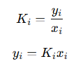
전체 조성 조건은 다음을 만족해야 한다.
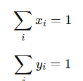
또한 버블점에서는 다음이 무조건 성립한다.
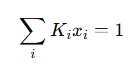
이들은 나중에 residue-curve map이라는 것을 유도하는데 사용된다.
2) 상대휘발도 α
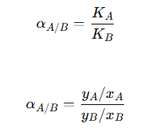 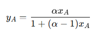
x-y 평형선 그릴 때 쓰는 기본식이다.
3) 공비점 azeotrope
공비점은 액상과 기상의 조성이 같은 점이다. 여기에서는 끓여도 기상 조성이 액상 조성과 같으니까, 단을 아무리 많이 쌓아도 그 조성을 넘어가기 어렵다.
이를 종합하면, 가 1에 가까우면 두 성분의 휘발도가 거의 같아서 단수가 너무 많이 필요하고, 일반 증류로 공비 조성을 못 넘으니까 압력을 바꾸거나, solvent/entrainer를 넣거나, 상분리를 이용한다는 취지로 11장이 도입된다.
----------------------------------------
Enhanced Distillation 개요
일반 증류는 휘발도 차이로 분리한다. 그런데 두 성분의 끓는점이 너무 비슷하거나, 공비점을 만들면 일반 증류만으로는 고순도 제품을 얻기 어렵다. 그래서 다음과 같은 해결 방법이 존재한다.
| Extractive distillation | 고비점 solvent를 넣어서 액상 activity coefficient를 바꿈 |
| Salt distillation | 비휘발성 염을 넣어서 상대휘발도 바꿈 |
| Pressure-swing distillation | 압력을 바꿔서 공비 조성을 이동시킴 |
| Homogeneous azeotropic distillation | entrainer를 넣어 균일상 공비를 만들어 분리 |
| Heterogeneous azeotropic distillation | entrainer를 넣어 상분리되는 공비를 만들고 decanter 사용 |
| Reactive distillation | 반응과 증류를 동시에 수행 |
각각을 살펴볼건데, 먼저 일단 Extractive distillation을 잠깐만 다뤄보자.
1)Extractive distillation: 증류는 결국 누가 더 기상으로 잘 올라가느냐를 보는 것인데, 액상 활동도 계수를 바꾸면 증류를 개선할 수 있다. 활동도 계수는 성분 i가 얼마나 불안정하게 존재하는지를 보정하는 값이다. 이상용액이면 1이지만 불안정할 경우 1보다 크고 기상으로 잘 날아간다. 반면 안정하면 1보다 작으며 액상에 더 오래 존재한다. 증류에서 핵심은 K인데, 이상기체에 가까운 경우 다음과 같이 볼 수 있다.
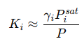
즉, 성분 의 기상 이동성은 증기압과 전체압력과 활동도계수에 의해 결정된다. 이때 활동도 계수는 솔번트를 넣으면 바꿀 수 있다는 특징이 있다. 그래서 extractive distillation에서는 solvent를 넣어서 액상 activity coefficient를 바꾼다. 그 결과 key component의 상대휘발도 가 유리해진다.
직관적으로 말하면 원래 A랑 B가 너무 비슷하게 날아가서 분리가 안 된다고 해보자. 일반 증류에서는 둘이 같이 올라간다.
A↑,B↑
그래서 탑 제품도 A+B, 바닥 제품도 A+B가 된다. 그런데 solvent S를 넣으면 S가 B를 액체에 붙잡는다.
B−S interaction strong
그러면 B는 액상에 남고, A는 위로 더 잘 올라간다.
A↑,B↓
그 결과 탑에서는 A-rich, 바닥에서는 B+S-rich가 된다. 그 다음 두 번째 컬럼에서 B와 S를 분리하고, S는 recycle하면 된다.
Use of Triangular Graphs
solvent나 entrainer를 넣는 경우(위에서 말한 Extractive distillation처럼) A-B-S 삼성분계가 된다. 세 성분 조성을 한 그림에 나타내려면 삼각도표가 필요하다.
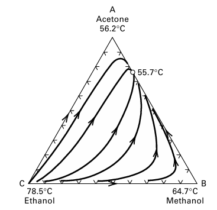
삼각도표에서 물질수지선을 살펴볼 것이다.
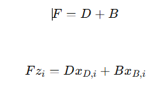
이 식을 정리하면
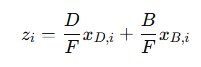
즉, feed 조성 z는 distillate 조성과 bottoms 조성의 가중평균이다. 그래서 삼각도표에서 D, F, B는 한 직선 위에 있어야 한다. 삼각도표에서의 F, D, B는 “점”, 즉 조성을 의미한다. 좀 어려운 말로 feed, distillate, bottoms product composition은 삼각도표 안에서 straight total-material-balance line 위에 있어야 한다.
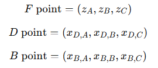
즉 삼각도표에서 feed 조성점 는 distillate 조성점 D와 bottoms 조성점 B를 잇는 선 위에 있어야 한다.
이제 Lever rule에 대해 알아보자. 삼각도표에서 D-F-B가 한 직선 위에 있을 때, 양의 비는 거리비로 계산할 수 있다. feed 점이 D에 가까우면 D 쪽 양이 적고, B에 가까우면 B 쪽 양이 적다.
그래서 삼각도에서는 “분리가 가능하냐?”를 볼 때 항상
- residue curve 또는 distillation curve를 보고,
- distillation boundary를 보고,
- F-D-B가 한 직선 위에 놓일 수 있는지 본다.
이때 residue curve가 무엇인가?
아주 단순한 batch still을 생각하자. 냄비에 A+B+C 액체가 있고 계속 끓인다. 증기는 계속 빠져나가고, reflux는 없다.
그러면 더 휘발성 큰 성분은 먼저 날아간다. 냄비 안에 남는 액체, 즉 residue는 점점 무거운 성분 쪽으로 조성이 바뀐다.
이때 시간에 따라 냄비 안 액체 조성 x가 삼각도 안에서 움직이는 경로가 residue curve다.
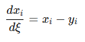
간단히 open distillation에서 남아 있는 liquid 조성을 시간에 따라 plot한 것이라고 보면 된다. residue curve의 화살표는 보통
낮은 끓는점 쪽→높은 끓는점 쪽으로 간다. residue curve map은 “이 혼합물을 증류하면 조성이 어느 방향으로 움직이는가?”를 보여주는 지도다.
다음으로 Distillation boundary가 뭐냐?
Residue curve map을 그리면 어떤 경우에는 삼각형 안이 몇 개의 영역으로 갈라진다. 이 영역을 나누는 선이 distillation boundary다. 이는 같은 증류 section 안에서는 조성 경로가 이 선을 넘어가기 어렵다는 것을 의미한다.
--------------------------------------
Extractive distillation, 추출증류
A+B가 잘 안 분리된다. 그러면 solvent S를 넣는다.그러면 액상 활동도계수 γi가 바뀌고, 그 결과 상대휘발도 αAB가 커진다.
구조:
A+B feed + solvent S
↓
Extractive distillation column
├─ top: A-rich product
└─ bottom: B+S
↓
solvent recovery column
├─ top: B product
└─ bottom: S recycle
즉 컬럼이 보통 2개 필요하다.
- 첫 번째 컬럼: A와 B를 solvent의 도움으로 분리
- 두 번째 컬럼: B와 solvent를 분리해서 solvent recycle
예시로서 ethanol-water는 공비가 있어서 일반 증류로 무수 에탄올을 만들기 어렵다. 여기에 ethylene glycol을 넣으면 ethylene glycol이 물과 강하게 상호작용한다. 물은 ethylene glycol 쪽에 더 잡힌다. 물의 휘발도가 낮아진다. ethanol이 상대적으로 더 잘 날아간다. top에서 ethanol을 얻기 쉬워진다. bottom에는 water + ethylene glycol이 남는다. 다음 컬럼에서 water와 ethylene glycol을 분리한다.
Azeotropic distillation, 공비증류
extractive distillation과 azeotropic distillation는 둘 다 제3성분을 넣는다는 점은 비슷하다. 각각의 차이점은 다음과 같다.
| 제3성분 이름 | solvent, extractive agent | entrainer |
| 보통 끓는점 | 높음 | 낮거나 중간일 수도 있음 |
| feed 성분과 공비 형성 | 원칙적으로 안 하는 게 좋음 | 공비를 형성해도 됨 |
| 목적 | 상대휘발도 변화 | 새로운 공비/상분리/region 변화 이용 |
| 난이도 | 비교적 단순 | 더 복잡 |
azeotropic distillation에서는 solvent를 특별히 entrainer라고 부르고, entrainer는 원료 성분과 azeotrope를 형성해도 된다. 반대로 extractive distillation은 높은 끓는점 solvent를 써서 나중에 회수하기 쉽게 만드는 쪽이다.
--------------------------------------
11.4 Pressure-Swing Distillation
압력을 바꾸면 공비 조성이 바뀌는 혼합물을, 서로 다른 압력의 두 컬럼으로 분리하는 방법을 의미한다.
공비점에서 xi=yi 이고, 그 공비 조성은 압력의 함수다. xaz=f(P). 만약 압력을 바꿨을 때 공비 조성이 많이 이동하면, 두 개의 압력에서 각각 증류를 수행해서 공비 장벽을 우회할 수 있다.
예를 들어 ethanol-benzene을 보자. ethanol-benzene은 760 torr에서 44.8 mol% ethanol의 minimum-boiling azeotrope를 만들고, 압력을 200 torr로 낮추면 공비 조성이 36 mol% ethanol으로 이동한다. 그래서 ethanol-benzene은 pressure-swing distillation 후보가 된다.
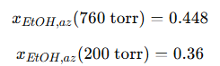
같은 ethanol-benzene 혼합물인데, 압력을 바꾸면 증류로 넘을 수 없는 벽의 위치가 바뀐다.
Pressure-swing이 가능한 조건은 어떤 이성분 공비혼합물에 대해
1.어떤 압력에서 공비가 사라지거나,
2. 적당한 압력 변화 범위에서 공비 조성이 약 5 mol% 이상 변하면, pressure-swing distillation을 고려할 수 있다.
Minimum-boiling azeotrope에서 기본 원리:
공비 조성이 가장 잘 날아가는 조성이라는 뜻이다. 그래서 증류탑 위쪽 distillate는 공비점 쪽으로 간다. A-B가 minimum-boiling azeotrope를 만든다고 하자. 이때 두 압력에서 공비 조성을 바꿀 수 있다.
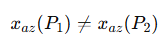
그러면 컬럼을 두개 쓴다.
Column 1: 낮은 압력 P1
Feed + recycle이 들어간다. Column 1에서 bottom으로 거의 순수 A를 얻는다.
B1≈A
Column 1 distillate는 공비 근처 조성으로 나간다.
D1≈xaz(P1)
이 D1은 Column 2 feed가 된다.
Column 2: 높은 압력 P2
Column 2에서 bottom으로 거의 순수 B를 얻는다.
B2≈B
Column 2 distillate는 다시 공비 근처 조성으로 나가고, 이걸 Column 1로 recycle한다.
D2→Recycle to Column 1
즉 minimum-boiling azeotrope에서는 distillate가 공비점으로 끌려가고, bottoms에서 한쪽 순성분을 얻는다고 보면 된다.
이게 무슨말인지 모를 것 같아서 숫자로 예시를 들어보겠다. A를 ethanol이라고 하자. ethanol-benzene의 공비 조성은 압력에 따라 이렇게 바뀐다.
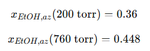
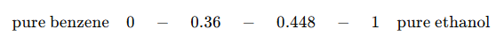
여기서 0.36은 낮은 압력에서의 공비점이고, 0.448은 높은 압력에서의 공비점 에탄올 조성이다.
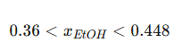
이 구간에 있는 조성은 압력에 따라 의미가 달라진다. 낮은 압력에서는
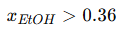
이므로 ethanol-rich side다. 따라서 bottoms로 ethanol을 얻을 수 있다.
높은 압력에서는
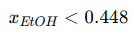
이므로 benzene-rich side. 따라서 bottoms로 benzene을 얻을 수 있다.
minimum-boiling azeotrope에서는 distillate가 공비점 쪽으로 빠져나가.
1. 숫자선의 뜻부터 다시
x축을 이렇게 잡은 거야.
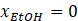
이면 순수 benzene.
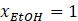
이면 순수 ethanol.
그래서 숫자선은 이렇게 생김.
여기서 어떤 stream이

이면 그 stream은
- ethanol 40 mol%
- benzene 60 mol%
이라는 뜻이야.
2. 공비점은 “벽”이라고 생각하면 됨
일반 증류에서 minimum-boiling azeotrope가 있으면, distillate가 공비점 쪽으로 간다.
즉 컬럼 위로 나가는 stream은 대략 공비 조성으로 간다.
교재도 minimum-boiling pressure-swing 구조에서 distillate가 각 압력의 azeotrope 쪽으로 접근하고, bottoms에서 한쪽 순성분을 얻는다고 설명한다.
3. 낮은 압력에서는 공비점이 0.36임
낮은 압력에서 ethanol-benzene 공비점이
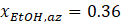
이라고 하자.
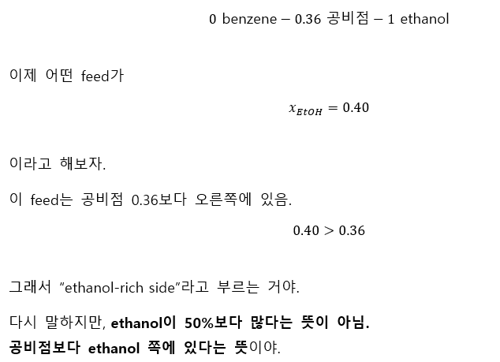
4. 왜 bottom이 ethanol 쪽으로 가냐?
minimum-boiling azeotrope에서는 distillate가 공비점 쪽으로 빠져나가.
낮은 압력에서는 distillate가 대략
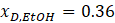
으로 나간다고 보면 돼.
feed는

이었지.
그러면 위로 나가는 distillate는 feed보다 ethanol이 적어.
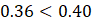
즉 위로 빠져나가는 놈은 상대적으로 benzene이 더 많은 stream이야.
그러면 남는 bottom에는 ethanol이 더 농축된다.
숫자로 해보자.
처음에 feed 100 mol이 있고,

이면 ethanol은 40 mol, benzene은 60 mol이야.
여기서 distillate 50 mol이 공비 조성 0.36으로 빠져나간다고 하자.
distillate 속 ethanol 양:
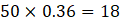
그러면 bottom에 남은 ethanol:
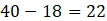
bottom 총량:

따라서 bottom ethanol 조성:
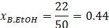
처음 feed는 0.40이었는데 bottom은 0.44가 됐지?
즉 bottom이 ethanol 쪽으로 이동함.
계속 증류하면 더 오른쪽으로 가서 최종적으로 pure ethanol 쪽으로 간다.
5. 높은 압력에서는 공비점이 0.448임
이제 같은 stream을 높은 압력 컬럼에 넣는다고 해보자.
높은 압력에서 공비점은
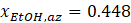
이다.
숫자선은 이렇게 됨.
아까 같은 stream이

이면 이번에는 공비점보다 왼쪽에 있음.
그래서 높은 압력에서는 이 stream이 benzene-rich side에 있다고 말하는 거야.
이것도 “benzene이 50%보다 많아서”가 아니라, 공비점 기준으로 benzene 쪽에 있다는 뜻이야.
6. 왜 높은 압력에서는 bottom이 benzene 쪽으로 가냐?
높은 압력에서 distillate는 공비점 쪽으로 간다.
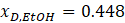
feed는
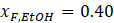
이었지.
이번에는 distillate가 feed보다 ethanol이 많아.
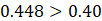
즉 위로 빠져나가는 distillate가 ethanol을 더 많이 가져간다.
그러면 남는 bottom은 ethanol이 줄고, benzene이 많아진다.
숫자로 해보자.
처음 feed 100 mol, ethanol 40 mol.
distillate 50 mol이 공비 조성 0.448로 빠져나감.
distillate 속 ethanol:
bottom에 남은 ethanol:
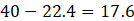
bottom 총량:
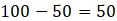
bottom ethanol 조성:
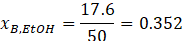
처음 feed는 0.40이었는데 bottom은 0.352가 됐어.
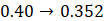
즉 bottom이 왼쪽, benzene 쪽으로 이동함.
계속 증류하면 pure benzene 쪽으로 간다.
7. 같은 0.40 조성이 왜 압력에 따라 다르게 행동하냐?
핵심은 이거야.
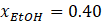
이라는 같은 조성을 보자.
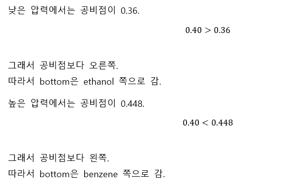
그래서 공비점보다 왼쪽.
따라서 bottom은 benzene 쪽으로 감.
표로 보면 이거야.
| 압력 | 공비점 | 같은 feed 의 위치 | bottom 방향 |
| 낮은 압력 | 0.36 | 공비점보다 오른쪽 | ethanol 쪽 |
| 높은 압력 | 0.448 | 공비점보다 왼쪽 | benzene 쪽 |
이게 pressure-swing의 전부야.
8. 그래서 두 컬럼을 왜 연결하냐?
낮은 압력 컬럼에서는 bottom으로 ethanol을 뽑을 수 있다.
그런데 Column 1의 distillate는 순수 제품이 아니라 낮은 압력 공비점 근처다.
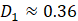
이걸 높은 압력 Column 2에 넣으면, 높은 압력 공비점은 0.448이니까
즉 Column 2 입장에서는 benzene 쪽 feed가 된다.
그래서 Column 2 bottom으로 benzene을 뽑을 수 있다.
Column 2 distillate는 다시 높은 압력 공비점 근처라서 순수 제품이 아니고, Column 1로 recycle한다. 교재도 lower pressure column의 distillate를 second column으로 보내고, second column distillate를 first column으로 recycle하는 구조를 Figure 11.23(b)에서 제시한다.
즉 압력을 다르게 한 두 개의 증류탑을 쓰면, 한 압력에서는 A를 bottom으로 빼고, 다른 압력에서는 B를 bottom으로 뺄 수 있다. 이게 pressure-swing distillation이다. 이제 다음 그림을 보면서 pressure-swing distillation 관련 개념을 해석해보자.
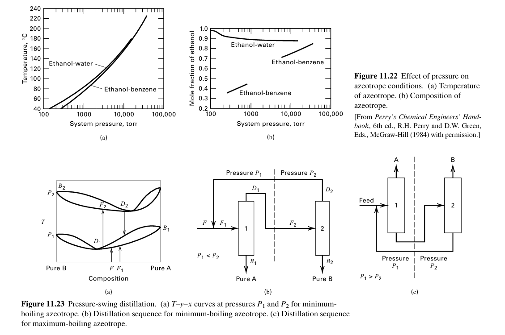
Figure 11.22(a)는 압력을 바꾸면 공비점의 온도가 바뀐다를 보여주는 그림이야. 근데 pressure-swing에서 진짜 중요한 건 온도보다 조성 변화다. 그게 오른쪽 그래프다.
오른쪽은 System pressure vs.Mole fraction of ethanol in azeotrope 그래프이다. 압력을 바꿨을 때, 공비점에서 ethanol 몰분율이 어떻게 바뀌는지를 보여준다. 그림을 해석해보면 에탄올-물 곡선은 위쪽에 있다. 0.85~0.95 근처에서 압력을 바꾸면 움직이는데, 크게 조성이 바뀌진 않는다. 반면 에탄올 벤젠계는 매우 급격하게 움직인다. 이 압력에 따른 공비 조성 이동 때문에 ethanol-benzene이 pressure-swing distillation 후보가 된다.
다음으로 Figure 11.23(a): minimum-boiling azeotrope에서의 T-y-x 곡선을 살펴보자. 이 그림은 minimum-boiling azeotrope를 가진 이성분계의 T−y−x곡선을 두 압력에서 그린 것이다.
왜 곡선이 골짜기 모양인가? minimum-boiling azeotrope는 말 그대로 최소 끓는점 공비점이다. 그래서 T−x−y선에서 공비점이 가장 낮은 온도의 골짜기처럼 나타난다.곡선의 최저점이 공비점이다.공비점에서는xA=yA이다. 즉 액상 조성과 기상 조성이 같아진다. 이제 기호를 해석해보자.
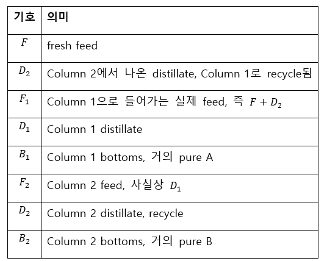 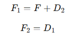 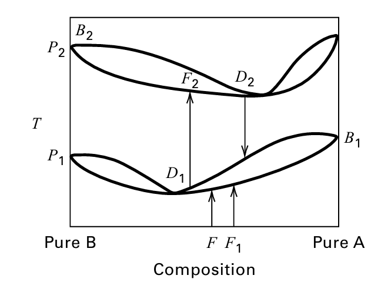 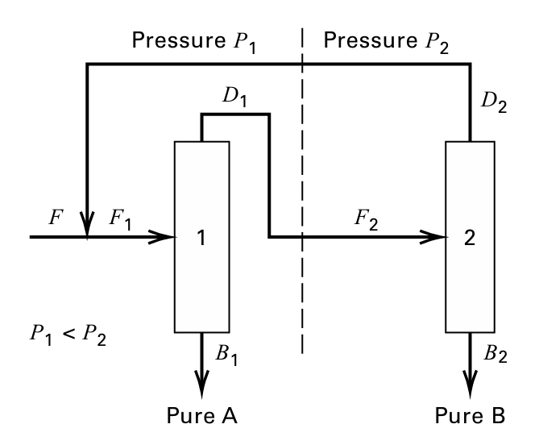
Column 1에서 무슨 일이 일어나는가?
Column 1은 낮은 압력 P1에서 작동한다. 그림에서 F1은 낮은 압력 P1곡선 위에서, 공비점 D1보다 오른쪽에 있다.
즉xF1,A>xaz,1이다.여기서 xaz,1은 낮은 압력 P1에서의 공비 조성이다.minimum-boiling azeotrope에서는 distillate가 공비점 쪽으로 간다. 그러므로 Column 1의 위쪽 제품은 D1≈xaz,1이 된다.
반대로 bottom은 공비점에서 멀어져서 오른쪽 끝, 즉 pure A 쪽으로 간다.B1≈Pure A
그래서 그림에서 Column 1 bottom이 B1, pure A로 표시되어 있다.
교재도 Figure 11.23(b) sequence를 적용할 때 첫 번째 컬럼의 feed 조성이 해당 압력의 공비 조성보다 크면, distillate는 그 압력의 minimum-boiling azeotrope로 접근하고 bottoms는 ethanol-rich product가 된다고 설명한다.
Column 2에서 무슨 일이 일어나는가?
Column 1 distillate D1은 Column 2로 간다.그래서 F2=D1이다. 그런데 Column 2는 높은 압력 P2에서 작동한다.
D1의 조성은 낮은 압력의 공비 조성 근처다.
xD1,A≈xaz,1
그런데 높은 압력에서는 공비 조성이 오른쪽으로 이동해 있다.
xaz,2>xaz,1
따라서 Column 2 입장에서 보면xF2,A<xaz,2이다.
즉 Column 2 feed는 높은 압력 공비점보다 왼쪽, 즉 B-rich side에 있다.
minimum-boiling azeotrope에서는 또 distillate가 공비점 쪽으로 간다.
D2≈xaz,2
그리고 bottom은 왼쪽 끝, pure B 쪽으로 간다.
B2≈Pure B
그래서 그림에서 Column 2 bottom이 B2, pure B로 표시되어 있다.
즉 두 번째 컬럼의 feed는 두 번째 컬럼 압력에서의 공비 조성보다 ethanol 함량이 작기 때문에, distillate는 그 압력의 공비 조성으로 접근하고 bottoms는 99 mol% benzene이 되며, distillate는 첫 번째 컬럼으로 recycle된다
왜 D2를 recycle하나?
Column 2의 distillate D2는 순수 A도 아니고 순수 B도 아니다.
그냥 높은 압력에서의 공비점 근처 조성이다.
D2≈xaz,2
따라서 최종 제품으로 팔 수 없다.
그런데 이 D2=를 Column 1으로 되돌리면 의미가 생긴다.
Column 1은 낮은 압력 P1에서 작동하고, 낮은 압력의 공비 조성은 더 왼쪽에 있다.
xaz,1<xD2,A
그래서 D2는 Column 1 입장에서 보면 ethanol-rich side에 있다. Fresh feed F와 섞어서 F1을 만들면 Column 1에서 다시 pure A bottom을 뽑을 수 있다. 즉 recycle은 쓰레기 stream이 아니라, 다른 압력으로 보내면 다시 분리 가능한 feed가 되는 stream이다.
| 방법 | 제3성분 사용? | 제3성분 이름 | 핵심 원리 | 장점 | 어려운 점 |
| Extractive distillation | 사용 | solvent / extractive agent | activity coefficient 변화 → 상대휘발도 증가 | 구조 비교적 단순 | solvent 회수 필요 |
| Azeotropic distillation | 사용 | entrainer | 새로운 공비 또는 distillation region 변화 이용 | 공비 혼합물 우회 가능 | residue map, recycle, boundary 때문에 복잡 |
| Heterogeneous azeotropic | 사용 | entrainer | 응축 후 두 액상으로 상분리 | decanter로 region 이동 가능 | decanter, binodal/tie-line 필요 |
| Pressure-swing | 미사용 | 없음 | 압력 변화로 공비 조성 이동 | solvent 오염 없음 | 압력 변화 비용, 두 압력 컬럼 필요 |
| Salt distillation | 사용 | salt | 비휘발성 salt가 변화 | solvent vapor loss 감소 가능 | 부식, 침전, 운전 문제 |